SkillBlenderLC
Overview
SkillBlenderLC extends SkillBlender [1] with a language-guided path for expanding a humanoid robot's skill library. A large language model decomposes a high-level instruction, identifies the required motor skills, and generates executable reward code when a capability is missing.
Each generated reward is evaluated by training a PPO policy in Isaac Gym. The system is designed to return policy-level metrics to the LLM for reward refinement and to add validated behaviors back to the reusable skill library. For more details, read the full report.
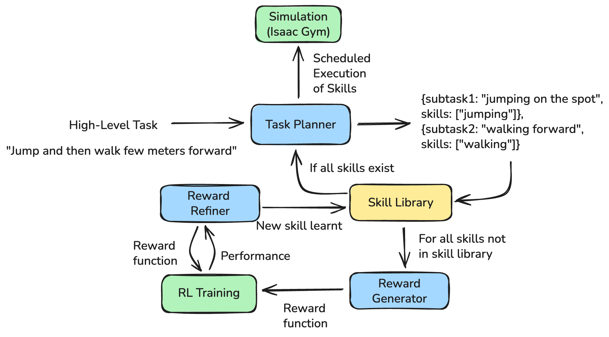
Why It Matters
Long-horizon humanoid tasks require both skill composition and new skill acquisition. Fixed libraries cannot cover every task, while manually writing and tuning a reward for each new behavior is expensive and brittle. One-shot LLM reward generation does not fully solve the problem: reward code can be structurally valid yet still produce an unstable or stationary policy after training.
SkillBlenderLC connects language reasoning to policy performance, making downstream RL behavior the signal for deciding whether a generated reward is useful.
How It Works
- Plan the task. The LLM receives the natural-language goal and current skill library, then returns an ordered JSON decomposition of subtasks and required skills.
- Detect missing capabilities. Existing skills are scheduled for reuse; absent capabilities such as jumping, kicking, or pushing are routed to the reward generator.
- Generate executable rewards. The LLM uses existing reward templates, available environment variables, and the requested subgoal to produce a Python reward class compatible with SkillBlender.
- Train and evaluate. PPO trains the skill in thousands of parallel Isaac Gym environments. Stability, joint torque, energy, smoothness, distance-to-target, and success metrics characterize the resulting policy.
- Refine and reuse. The proposed feedback loop supplies the reward code and measured performance to the LLM for revision. A validated skill is added to the library for later task composition.
Experimental Setup
- Robot: Unitree H1 humanoid with 19 actuated degrees of freedom
- Simulation: NVIDIA Isaac Gym with the PhysX physics engine [2]
- Learning: PPO with 4,096 parallel environments [3]
- Training budget: 15,000 episodes per policy
- Compute: eight NVIDIA L40S GPUs
- Typical primitive training time: 13–15 hours
We prompted six models identically across skill selection and reward generation: GPT-4o, Claude 4.5 Sonnet, Gemini 2.5 Flash, LLaMA 3.3 70B, Mistral Large, and DeepSeek V3.
Evaluation
Skill Selection
We evaluated task decomposition on eight SkillBlender tasks. A prediction counted as correct only when the model identified the complete required skill set, making this a strict task-level measure rather than partial skill recall.
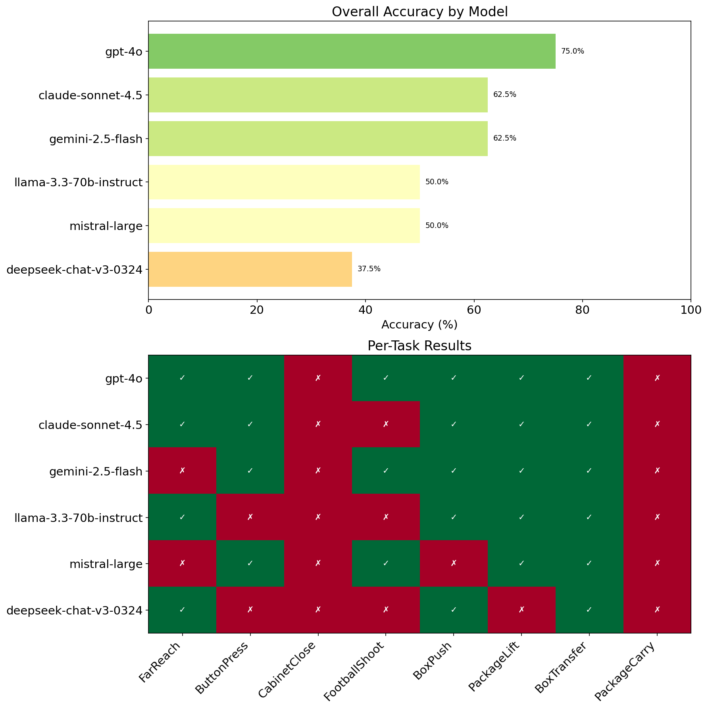
GPT-4o performed best, while every model failed on PackageCarry and all but GPT-4o missed at least one required skill for several contact-rich or multi-stage tasks. The primary failure mode was omission of secondary skills needed for stabilization, approach, or object interaction.
Reward Generation for Existing Skills
We tested generated reward values on squatting and button press, then trained a policy to convergence using each reward. Squatting measures whether the robot reaches a target torso height while remaining balanced. Button press is a composite task that requires walking toward a wall and reaching the button.
| Model | Squat | Height error | Button press |
|---|---|---|---|
| GPT-4o | Failed | 0.060 m | Failed |
| Claude 4.5 | Success | 0.051 m | Success |
| Gemini 2.5 | Failed | 0.158 m | Failed |
| LLaMA 3.3 70B | Failed | 0.210 m | Failed |
| Mistral Large | Success | 0.051 m | Failed |
| DeepSeek V3 | Success | 0.045 m | Failed |
| Ground truth | Success | 0.045 m | Success |
Claude, Mistral, and DeepSeek produced successful squatting policies; DeepSeek matched the ground-truth height error. Only Claude completed button press. These experiments used a single reward-generation round, so they do not measure convergence of the full refinement loop.
Squatting Rollouts
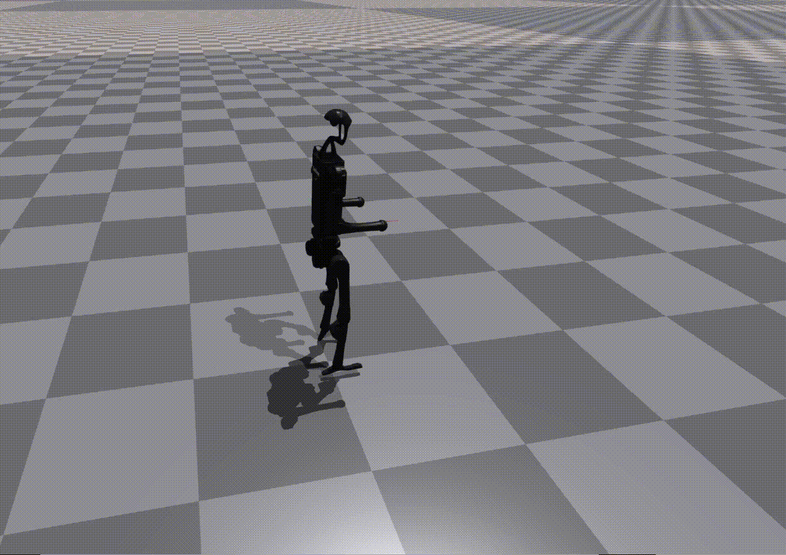

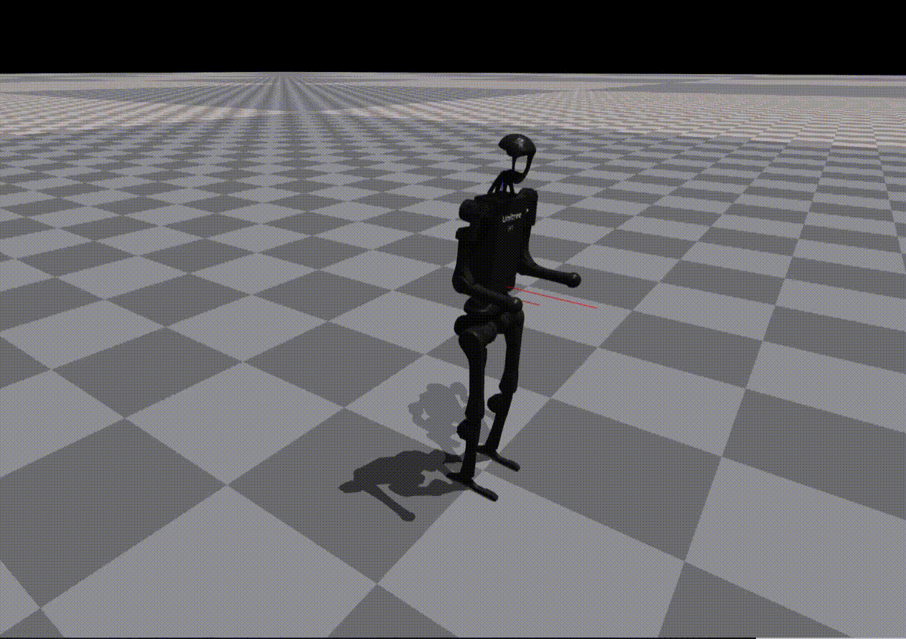
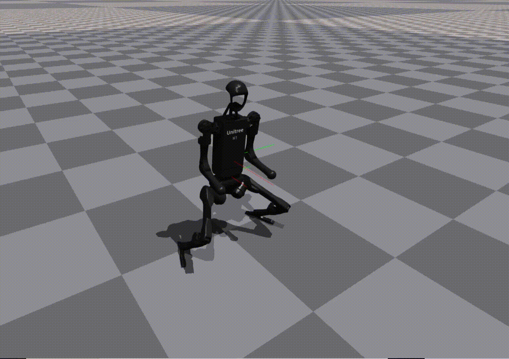
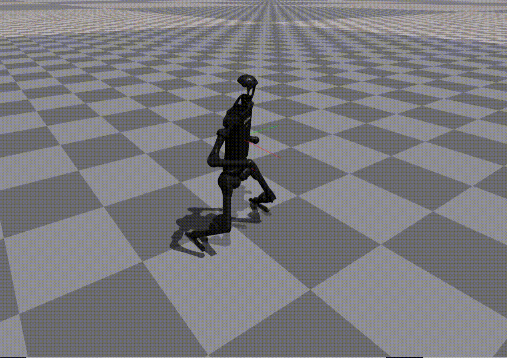

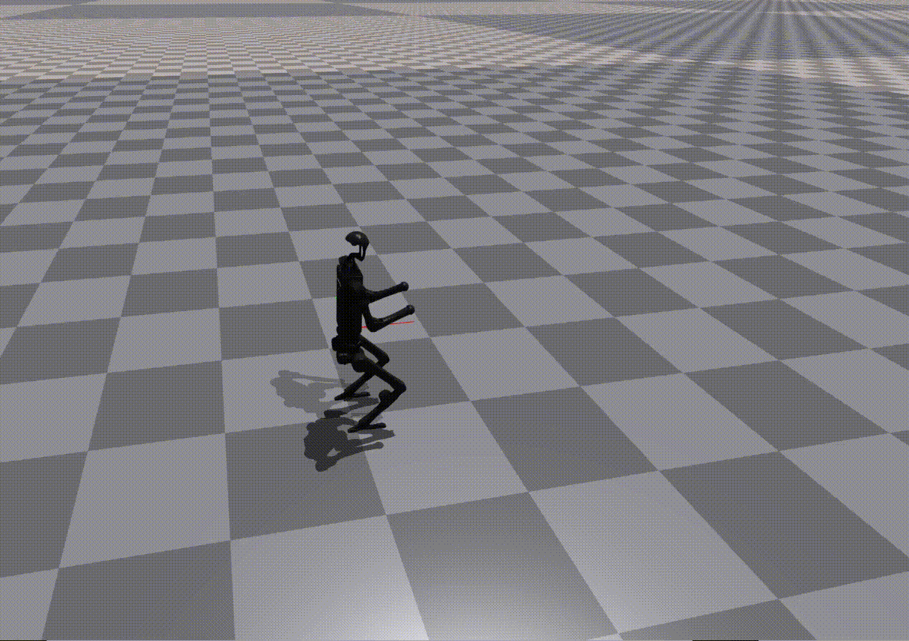
Button-Press Rollouts
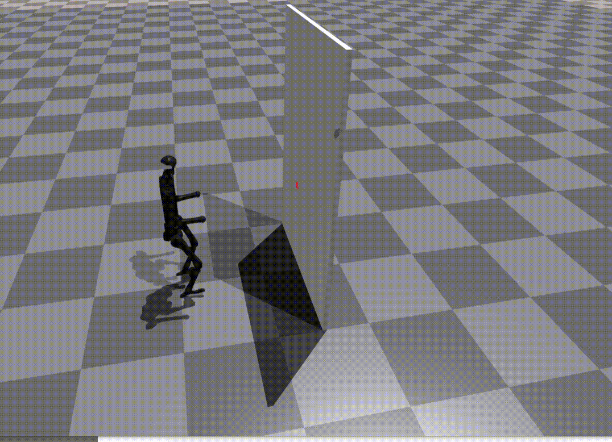
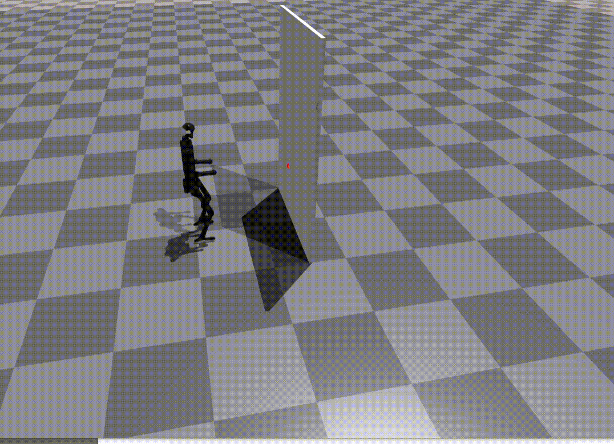
Reward Generation for New Skills
We used GPT-4o to generate rewards for eight behaviors absent from the initial setup: sway, punch, lie, jump, bend, wave, kick, and side-step. Bend and side-step were fully learned. Kick and jump were partially successful, while sway, punch, lie, and wave failed to produce the intended behavior.
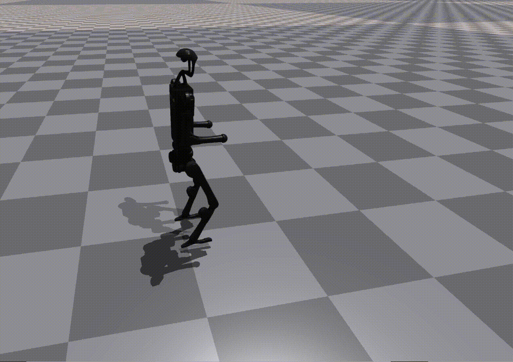
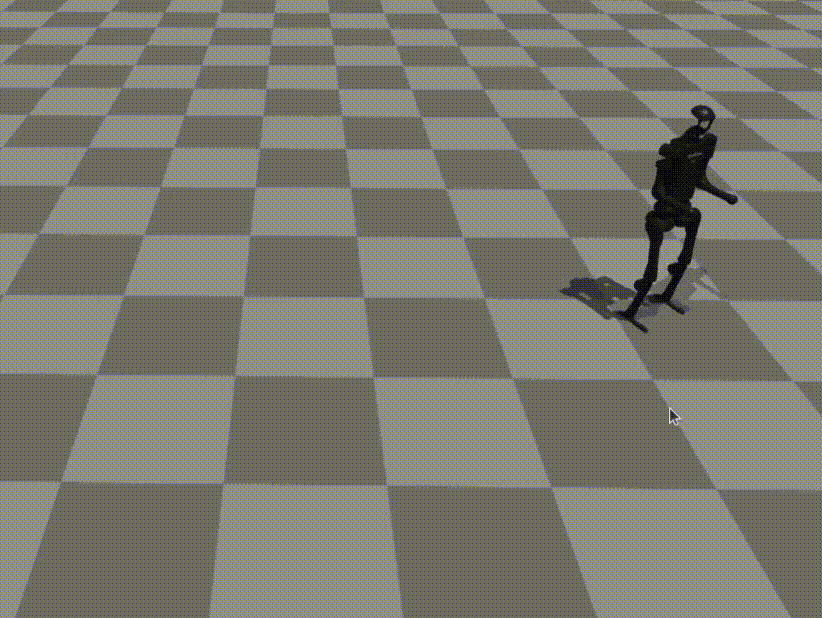
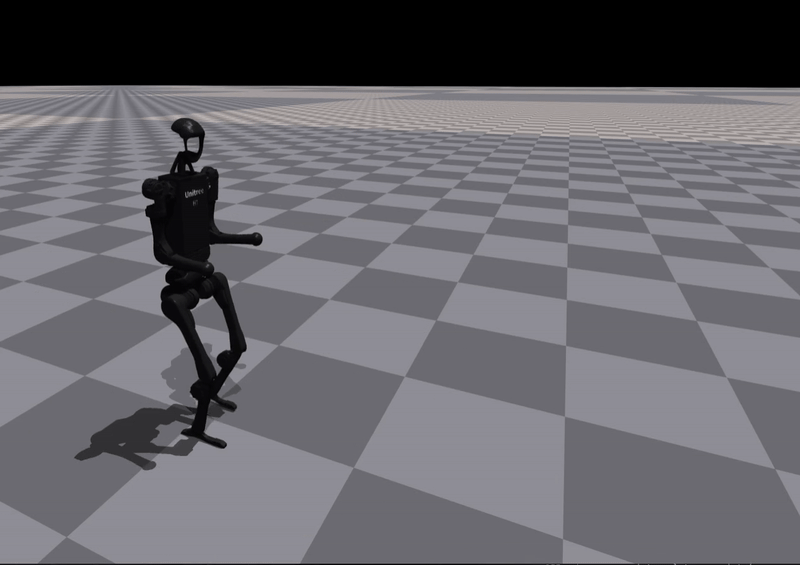
The failed and partial policies expose the main limitation of text-only reward synthesis: multi-stage dynamics and balance constraints can be difficult to express through reward terms and scalar weights alone.
Prompt Design
We design explicit, constrained prompts for each stage to ensure consistency, interpretability, and reproducibility.
Task decomposition prompt
You are a high-level humanoid motion planner and meta-skill developer.
Your task is to decompose a long-horizon natural-language goal into a sequence of
short, atomic subtasks. Each subtask must include a concise "subgoal" (one line of natural language)
and a list of "skills" required to achieve it.
You currently have access to the following SKILL LIBRARY:
{SKILL_LIBRARY}
For every subgoal:
1. Compare the subgoal against the skills in the current library.
2. If ALL required abilities exist, reuse them directly.
3. If the subgoal requires a new ability not in the list, invent a new skill:
- Use short (1–2 words), descriptive, physically plausible humanoid actions
- Avoid abstract or cognitive terms
- Do not use synonyms of existing skills unless functionality differs
- If no existing skill fully covers the subgoal, you must create a new primitive skill
The final output must be a valid JSON object of the form:
{
"subtasks": [
{"subgoal": "<short actionable goal>", "skills": ["Skill1", "Skill2", ...]},
...
]
}
Guidelines:
- Ensure subtasks are sequential and fully cover the task
- Keep skill names capitalized and concise
- Keep subgoals to one line
- Return only the JSON with no explanations or comments
Reward generation prompt
You are a code-generation agent designing a new humanoid skill reward function.
Return only valid Python code defining the reward class.
Do not include explanations, markdown fences, comments, or introductory text.
Below are the existing primitive skill rewards currently used:
<existing_rewards>
{reward_context}
</existing_rewards>
Analyze these to understand parameter conventions and scaling.
Below is the humanoid environment definition used for training:
<environment_context>
{env_context}
</environment_context>
Now, design a NEW reward class for the following subgoal and skill:
Subgoal: {subgoal}
Skill: {skill_name}
Rules:
1. Maintain the same Python class structure (class rewards: with nested class scales:)
2. Reuse ONLY variables, parameters, and scale names already defined
3. Do NOT invent new variables or physics metrics
4. Keep numerical scales realistic and consistent with reference rewards
5. Return only valid Python code, with no explanations or comments
Reward refinement prompt
You are a humanoid reward designer.
The following reward function was trained in RL but performed poorly.
Subgoal: {subgoal}
Skill: {skill}
[Generated reward]
{generated_reward}
[Observed RL feedback metrics]
{feedback_str}
Based on these feedback metrics, rewrite the reward function to:
1. Improve stability, convergence, and success rate
2. Keep structure consistent with existing reward format (class rewards: with nested scales)
3. Keep parameter names consistent
4. Adjust only scale magnitudes or add missing shaping terms if necessary
Output only the corrected Python code starting with 'class rewards:'.
Do NOT include explanations or markdown.
Takeaway
The experiments show that LLMs can produce executable, environment-consistent rewards, but code validity does not guarantee a learnable behavior. Numerical reward scaling, implicit contact requirements, balance, and multi-stage motion remain the main failure points.
References
- Y. Kuang et al., SkillBlender: Towards Versatile Humanoid Whole-Body Loco-Manipulation via Skill Blending , 2025.
- V. Makoviychuk et al., Isaac Gym: High Performance GPU-Based Physics Simulation for Robot Learning , 2021.
- J. Schulman, F. Wolski, P. Dhariwal, A. Radford, and O. Klimov, Proximal Policy Optimization Algorithms , 2017.